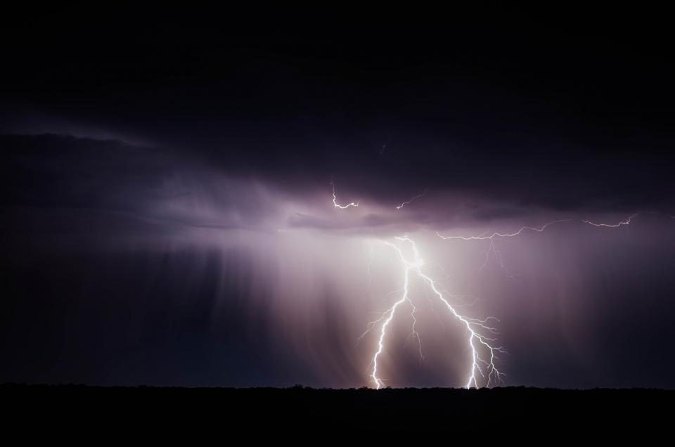
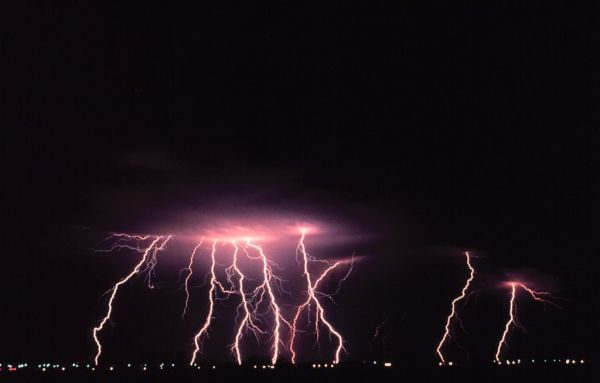
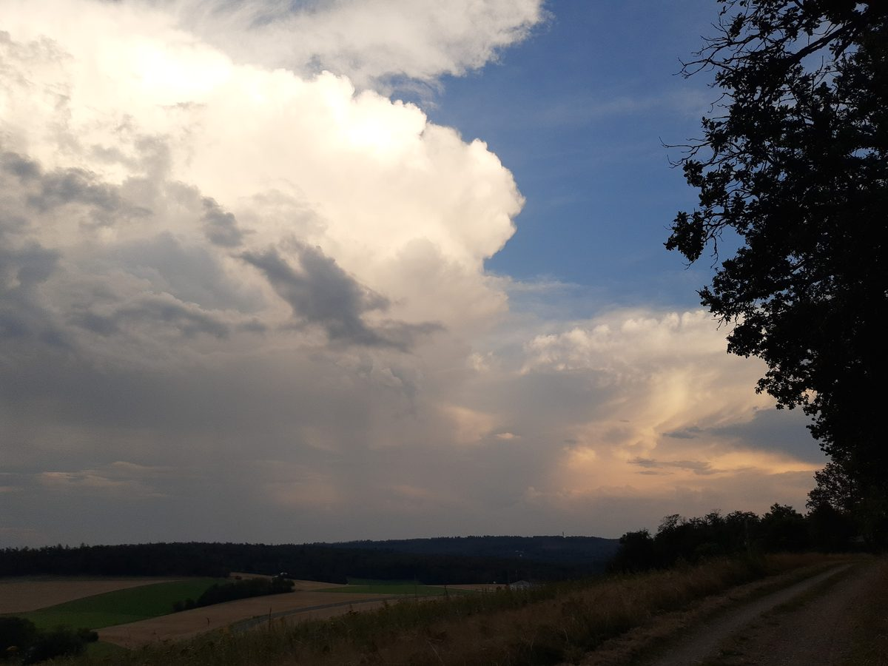
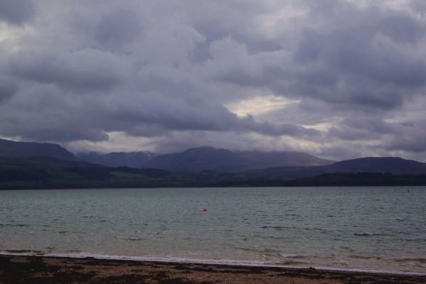
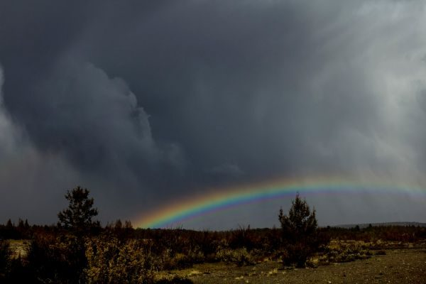

制作側の連想
「courage」から、光ってから鳴るまでの数秒を
店名の由来は分かりません。制作側は「courage(勇気)」という語から、稲光が走ってから雷鳴が届くまでの数秒、ちょっと身構えて待つ時間を連想しました。光ってから音までの秒数に音速(約340m/秒)をかけると距離が分かる、という数え方に見立てて、このサイトのページを「0秒」「1秒」「2秒」と並べています。制作側の連想で、お店の理念・由来とは無関係です。
秒数の数え方(イメージ)
光って、数えて、ごろごろ。
写真は東かがわ市の風景ではありません。数え歌のイメージで選んだ、国外・撮影地不明のフリー素材です。
- 0秒ピカッ

撮影地不明のイメージ - 1秒約340m先
撮影地不明のイメージ - 3秒約1km先

国外のイメージ(ドイツ) - 10秒約3.4km先

国外のイメージ(英国) - 晴れ間雨のあとに

国外のイメージ(米国)
ご案内
お店のこと(確認できたものだけ)
| 所在地 | 〒769-2702 香川県東かがわ市松原６８０ |
|---|---|
| 電話 | 0879-24-9710 |
| 営業時間 | 準備中 |
| 定休日 | 準備中 |
| ご予約 | 準備中 |
| 駐車場 | 準備中 |
| SNS | Instagram @cafecourage |